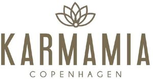

Trade Mark Journal No.2025/042 17 October 2025
WO0000001878920 (14,18,25)
Office of origin: Denmark
Date of International Registration:14 August 2025
Date of designation in the UK:
14 August 2025

International priority date claimed: 5 August 2025
(Denmark)
- Class 14
- Ornaments [jewellery, jewelry (Am.)]; precious jewellery; enamelled jewellery; jewel pendants; decorative pins [jewellery]; jade [jewellery]; identification bracelets [jewelry]; rings [jewellery]; lockets [jewellery]; jewellery; chains [jewellery]; cloisonné jewellery; bracelets [jewellery]; crosses [jewellery]; ivory jewellery; clips of silver [jewellery]; amulets [jewellery]; custom jewelry; scarf clips being jewelry; jewellery of yellow amber; paste jewellery; gold plated brooches [jewellery]; women's jewelry; synthetic stones [jewellery]; decorative brooches [jewellery]; sterling silver jewellery; gold jewellery; jewellery fashioned of semi-precious stones; chains [jewellery]; jewelry for the head; jewellery containing gold; agate as jewellery; jewellery, including imitation jewellery and plastic jewellery; jewellery made of precious metals; jewellery made of bronze; presentation boxes for jewellery; jewellery fashioned from non-precious metals; personal jewellery; jewellery of yellow amber; imitation jewellery ornaments; jewellery made from silver; jewellery for personal adornment; jewellery chain of precious metal for anklets; gold rings; jewellery made of semi-precious materials; jewellery made of plastics; jewellery made of glass; jewellery, clocks and watches; rings [jewellery] made of precious metal; jewellery in the form of beads; charms [jewellery] of common metals; jewellery made of precious metals; jewellery ornaments; parts and fittings for jewellery; rings [jewellery] made of non-precious metal; jewel chains; key chains as jewellery [trinkets or fobs]; jewellery made of crystal coated with precious metals; amulets [jewellery]; fitted jewelry pouches; jewellery coated with precious metal alloys; ear ornaments in the nature of jewellery; dress ornaments in the nature of jewellery; decorative articles [trinkets or jewellery] for personal use; clocks; small clocks; clocks and watches, electric; digital clocks; watches; clocks and watches; clocks and parts therefor; horological instruments having quartz movements; watches made of precious metals; cases for watches and clocks; bracelets; wristwatches; gold plated bracelets; jewellery rope chain for bracelets; women's watches; jewellery boxes; jewelry cases [caskets or boxes]; small jewelry boxes, not of precious metal; jewelry boxes, not of precious metal; necklaces [jewellery, jewelry (Am.)]; gold-plated necklaces; silver-plated necklaces; jewellery rope chain for necklaces; gold necklaces; necklaces of precious metal; jewellery chain of precious metal for necklaces; brooches [jewellery]; gold plated rings; rings [jewellery]; earrings; gold plated earrings; hoop earrings; silver-plated earrings.
- Class 18
- Bags; garment carriers; bags made of leather; overnight bags; bags; bags made of imitation leather; knitted bags, not of precious metals; handbags; clutch bags; evening handbags; ladies' handbags; handbags made of leather; handbags, purses and wallets; handbags made of leather; handbags made of imitation leather; net bags for shopping; haversacks; clutches [purses]; small clutch purses; hipsacks; make-up boxes.
- Class 25
- Shorts; clothing; jackets [clothing]; woven clothing; trousers; tops [clothing]; foulards [clothing articles]; girls' clothing; stuff jackets [clothing]; clothing of leather; children's wear; infant wear; quilted jackets [clothing]; silk clothing; woolen clothing; cashmere clothing; belts [clothing]; leather belts [clothing]; clothing made of fur; short sets [clothing]; sashes for wear; underwear; bottoms [clothing]; Japanese traditional clothing; coverups; bathing suit cover-ups; clothing of imitations of leather; kimonos; waist strings for kimonos (koshihimo); tightening-up strings for kimonos (datejime); full-length kimonos (nagagi); wrap belts for kimonos (datemaki); short overcoat for kimono (haori); bathing suits; bikinis; shorts; fleece shorts; skorts; skirts; sarongs; trousers; short trousers; blouses; crop tops; short-sleeve shirts; tank tops; shirts; open-necked shirts; short-sleeve shirts; woven shirts; collared shirts; shirts and slips; short-sleeve shirts; leggings [trousers]; trousers of leather; trousers for children; shoes; sandals; headbands [clothing]; bandeaux [clothing]; tee-shirts; printed t-shirts; short-sleeved or long-sleeved t-shirts; jackets [clothing]; reversible jackets; long jackets; heavy jackets; fur coats and jackets; sleeved jackets; cagoules; bomber jackets; men's and women's jackets, coats, trousers, vests; cardigans; twin sets; waistcoats; long sleeved vests; quilted vests; korean traditional women's waistcoats [baeja]; bralettes; vest tops; halter tops; mock turtlenecks; jackets [clothing]; sweaters; waistcoats; long sleeve pullovers; windshirts; mock turtleneck shirts; underwear; ladies' underwear; gloves [clothing]; scarves; kerchiefs [clothing]; neck scarves; shawls; shawls and headscarves; shawls and stoles; shawls [from tricot only]; caps being headwear; hats; small hats; stockings; socks and stockings; sweatpants; tracksuit bottoms; sweatpants; jogging tops; jogging sets [clothing]; dresses; women's ceremonial dresses; denim jeans; bath robes; one-piece suits; union suits; bathing suits; bathing costumes for women; fitted swimming costumes with bra cups; sarongs; beach wraps; tunics; undershirts for kimonos (juban); undershirts for kimonos (koshimaki); sash bands for kimono (obi); detachable neckpieces for kimonos (haneri); denim jeans; denim jackets; denims [clothing]; coats of denim; tights; woollen tights; ankle boots; rubbers [footwear]; sneakers; boots for sports; boots; ladies' boots; high-heeled shoes; turbans; blazers.
Karmamia ApS
Representative: Bruun & Hjejle Advokatpartnerselskab, Nørregade 21, DK-1165 København K, DENMARK